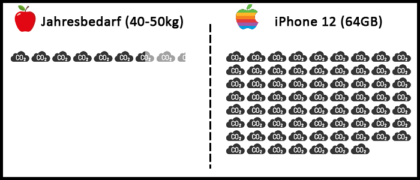
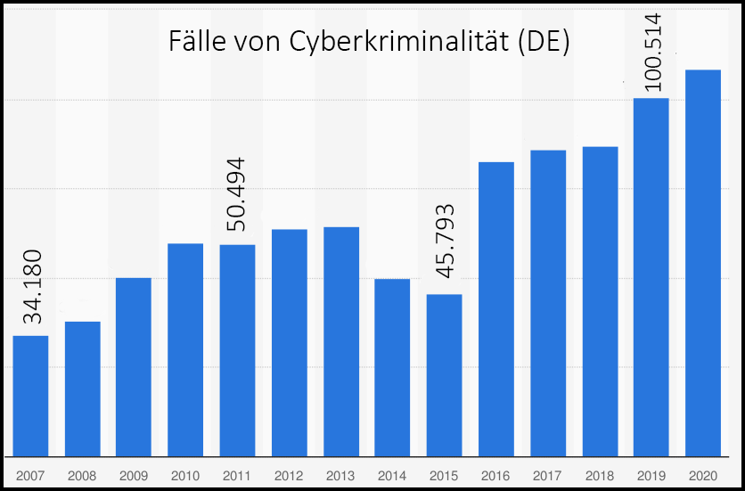

Egal ob Äpfel oder Apple - bei fast allen Produktionen entsteht CO2. Bei manchen Produkten allerdings mehr als bei anderen. So entstehen bei der Produktion von 50kg Äpfeln (dem durchnittlichem Jahreskonsum p.P) gerade einmal 8 kg CO2. Das iPhone 12 hingegen benötigt über 70kg zur Herstellung.

CO2 ist ein großer Einflussfaktor auf den Klimawandel. Beim Kauf neuer Produkte sollte daher auf die CO2-Bilanz geachtet werden.
Immer mehr Nutzer speichern ihre Daten nicht mehr lokal sondern dezentral in der Cloud. Die damit verbunenen Risiken sind den meisten Nutzern nicht bewusst und die Verantwortung wird an den Cloud-Betreiber abgegeben.
Doch bekanntermaßen ist kein System 100% sicher. Wie sollte man sich also verhalten?
Der wichtigste Grundsatz ist Daten nie nur an einer Stelle zu sichen. Es wird empfohlen, neben dem Speichern in der Cloud auch ein lokales Abbild der Datei zu haben sowie eine weitere Kopie auf einer externe Festplatte.
Außerdem sollten wichtige und private Daten immer ausreichend verschlüsselt sein.
Das Bundesamt für Sicherheit in der Informationstechnik empfiehlt außerdem bei der Wahl des Cloud-Anbieters auf Sicherheitszertifikate und -testate zu achten. Des Weiteren weist das Bundesamt darauf hin, dass Cloud-Anbieter in den Nutzungsbedingungen Zugriffs- und Nutzungsrechte für die hochgeladenen Daten erheben können. Die Wahl des Anbieters muss also wohl überlegt sein.
Dass auch das Internet nicht von Kriminalität verschont bleibt zeigt der neueste Bericht des BKAs. Das Jahr 2020 verzeichnete ein Allzeithoch von 108.474 Cyber-Verbrechen. Hierzu zählen Computerbetrug, Ausspähen und Abfangen von Daten, Fälschung u.v.m. Um sich vor solchen Attacken zu schützen sollten Passwörter zufällig gewählt und regelmäßig geändert werden.

Quelle: Statista, Bundeskriminalamt